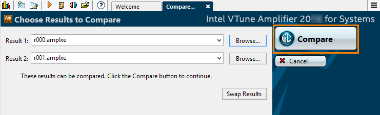

After you import the
idletest.sww1 and
piconsoletest.sww1 result files to the Intel® VTune™
Amplifier project, the collected results open in the
Platform Power Analysis viewpoint.
After you import the
idletest.sww1 and
piconsoletest.sww1 result files to the Intel® VTune™
Amplifier project, the collected results open in the
Platform Power Analysis viewpoint.
To interpret the performance data provided during the energy analysis, follow the steps below:
Note
The screen shots and energy usage data provided in this tutorial are created from data gathered from a Windows* system with 2 CPU cores and with Wi-Fi disabled during collection. Your data may vary depending on the number and type of CPU cores on your target system and transient system activity while collection occurred.
Review Result Summary
Open the r000 tab for the analysis result for the idle system and select the Summary tab. The first section of the Summary window displays the summary statistics on the overall collection run time execution per power analysis metrics:
Tip
Hover over the question mark icon to view a description of the metric.
The Elapsed Time per Core Sleep State Histogram graph shows the amount of time spent in each sleep state. In the idle system analysis, most of the time was spent in C3, the deepest sleep state.
Switch to the r001 tab for the analysis result collected running the Pi Console program and select the Summary tab for this result. You will see that there is a much smaller amount of time spent in active core states (non-C0 states).
Review the Elapsed Time per Core Sleep State Histogram and observe that there is a significant amount of time spent in the active (C0) core state.
Identify Cores in Active States
Switch to the CPU C/P States tab to identify cores with the highest time spent in the active C0 state. Spending more time in deeper sleep states (C1-Cn) provides greater power savings. Examining the relationship of activity between cores illustrates how effectively an application or system process is utilizing multiple threads.
Tip
- Click the expand arrows in the table to view more details in each column.
- Click the plus sign next to package_0 to expand the visualization to include the core_1 and core_0 timelines.
The following example shows the activity collected when the system was idle (r000):
|
By default, VTune Amplifier displays data grouped by core and sorted by CPU time spent in the deepest C-state in the descending order. In this example, you can see that the most time was spent in ACPI C3, the deepest sleep state for the package core, and C7, the deepest sleep state for the hardware core. Both core_1 and core_0 spent approximately 57 seconds of the 60 second run time in the deep sleep state. |
|
Energy efficiency is optimized when the package can enter a sleep state. The package must remain active if at least one core is active. In this example, the package is able to spend time in the C7 sleep state, which is represented by the darkest green. |
The time spent in the active state, C0, is represented in white in the core_0 and core_1 lines. In this example, the time spent in the active state is lined up for both cores. This optimizes the time spent in active states and improves overall energy efficiency, as seen in the package_0 line. |
|
The system hardware was able to spend most of the collection time in the C7 sleep state. The spikes to more active states coincide with similar spikes on the package and core side. Having these similar spikes shows that a system is well-synchronized between the hardware and operating system. |
Switch to r001 to view the CPU C/P States tab for the data collected when the Pi Console program was running, as shown in the example below.
|
In this example, you can see that the most time was spent in ACPI C0, the active state for the package core, and C0, the active state for the hardware core. On the package side, core_1 spent 45.932 seconds in the C0 state and 23.390 seconds in the C3 sleep state. core_0 spent 29.897 seconds in the C0 state and 40.471 seconds in the C3 sleep state. On the hardware side, the results were similar with core_1 spending more time in the active state and core_0 spending more time in the sleep state. |
|
In this example, the package was unable to enter a sleep state at any time. All package time was spent in the C0 active state. |
In this example, core_0 and core_1 alternated between the active and sleep states. The system scheduled the application tasks so that the activity switched between cores. As a result, one core was always active, which caused the package to continue to be active for the duration of the collection. |
|
The system hardware alternated between the active C0 state and the deep sleep C7 state. The activity on the hardware coincided with the activity on the operating system. When one operating system core was active, the corresponding hardware core was also active. |
You can zoom in on a particular time frame to identify the processes that caused system activity. Click and drag to select the time for which you would like to see more detail. A menu appears with a Zoom In on Selection option.
By viewing only a small section of the data, you can more easily see the transitions between the active and inactive states and notice that the cores are not active at the same time.
Identify Processor Wake-ups and Possible Causes
Switch to the Core Wake-ups pane and group the data by the Wake-up Reason/Wake-up Object/Core to identify causes of the processor wake-ups. The table at the top of the tab lists the wake-up reasons.
- RDY: Ready event
- IPI: Inter-processor interrupt
- CLK: Clock interrupt
- DPC: Deferred procedure call
- INT: Hardware interrupt
- Unknown: The wake-up reason could not be identified.
Each core has a wake-up band that represents the wake-up objects that cause the core to switch from a sleep state to an active state. Each wake-up object type is represented using a unique color. By hovering over the band, you can view all of the wake-up objects at that point in time, including details such as wake-up object type, start time, and duration.
In the grid, you can select a wake-up object with the highest Wake-up Count, right-click, and select the Filter In by Selection from the context menu. VTune Amplifier updates the grid and timeline displaying the data relevant only for the selected object. The example below shows wake-ups per core initiated by the clock (CLK) object selected in the grid for the Pi Console program analysis.
Compare Analysis Results
Use the following steps to open a comparison of the idle system collection result (r000) and the Pi Console program collection result (r001):
- Close the results tabs if they are open. You cannot compare results if one or both are already open.
Click the Compare Results button on the top toolbar.
The Compare tab opens.
Click the Browse button next to the Result 1 line.
Navigate to the location of the idle system analysis result file, select the r000.amplxe result file, and click Open.
The location of the project and result files was established when you created the new project.
Click the Browse button next to the Result 2 line.
Navigate to the location of the Pi Console program analysis result file, select the r001.amplxe result file, and click Open.
Click the Compare button.
A new tab opens displaying the Platform Power Analysis viewpoint.
The Summary window of the Platform Power Analysis viewpoint displays statistics on the overall collection run time execution per power analysis metrics. The result for the idle system analysis shows on the left of the summary statistics and the result for the data collected when the Pi Console program was running appears on the right.
The Wake-ups/sec per Core table shows that the total time spent in non-C0 states (sleep states) was much greater when the system was idle than when the Pi Console program was running.
You can also see that the total wake-up count was significantly higher when the system was idle. This is because the system was in an active state for most of the time the Pi Console program was executing and therefore there was no transition, or wake-up, from a sleep state to an active state during that collection.